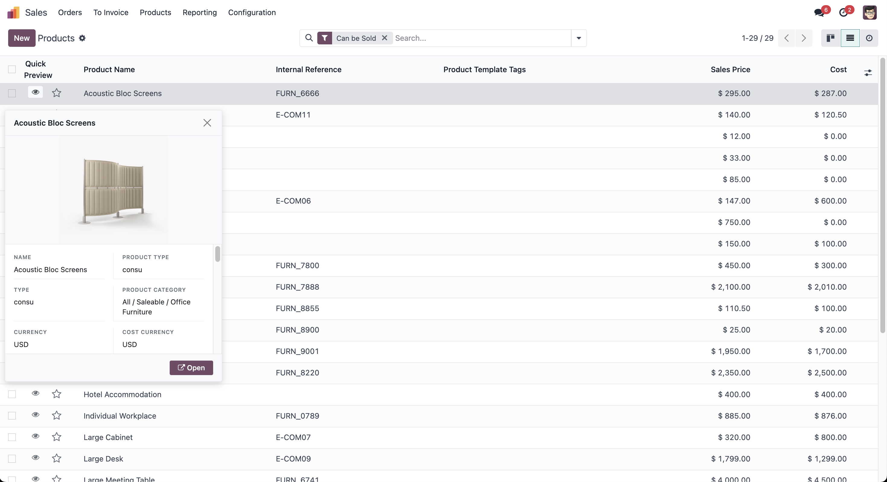
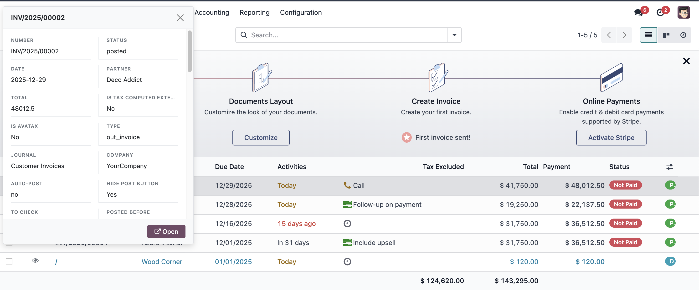
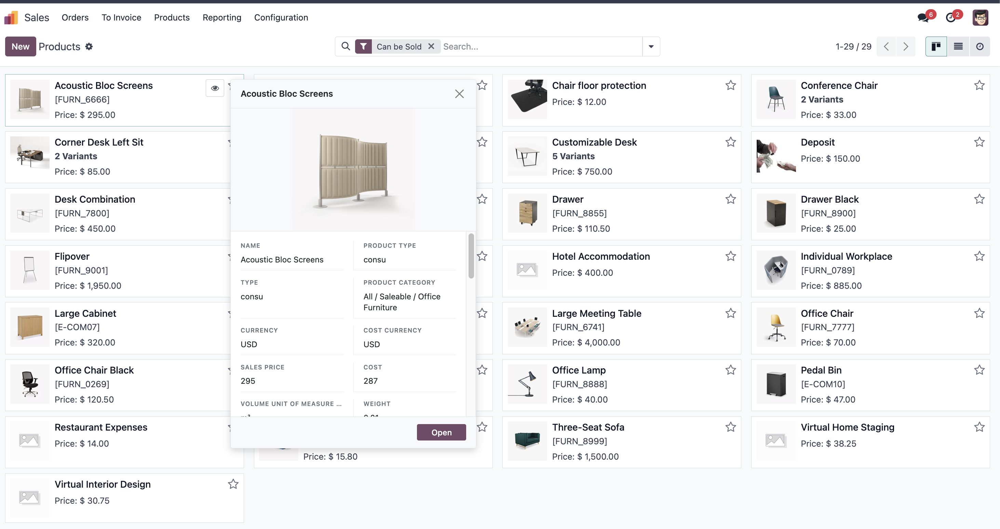
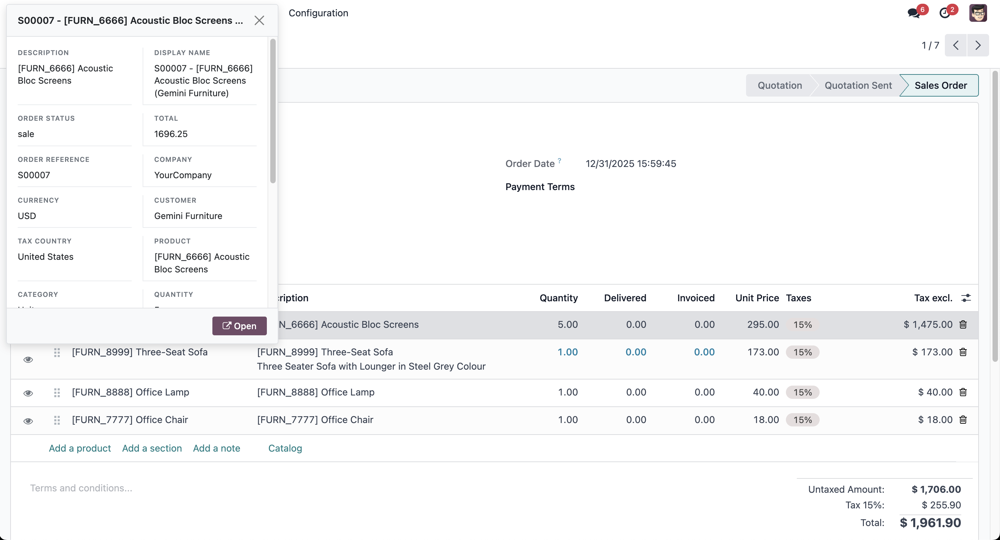
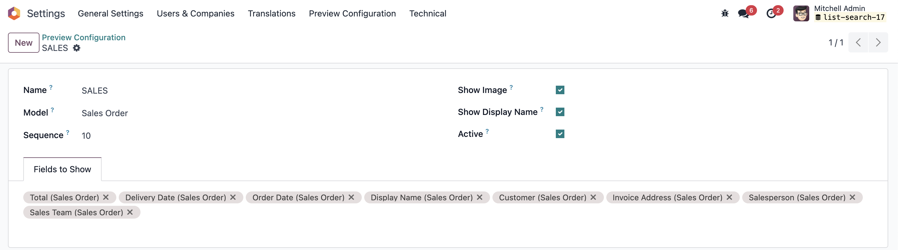
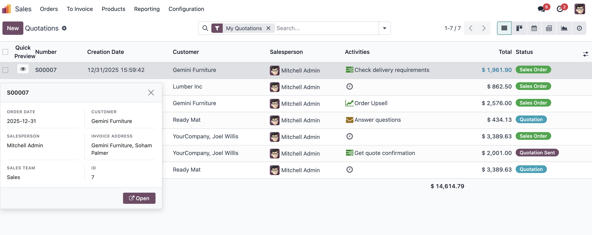

Quick Record Preview
Quick Record Preview is a powerful Odoo module that enhances your productivity by providing
instant access to record details without leaving your current view. With a simple click on the preview button,
you can view comprehensive record information in a popup, eliminating the need to navigate away from your
current context.
Key Features
One-Click Preview
Click the preview button in any list or Kanban view to instantly view record details in a popup window. No
need to open the full form view or navigate away from your current context.
Works Everywhere
The preview functionality is available in:
- List Views: Preview any record directly from the list
- Kanban Views: Preview cards without opening them
- X2Many Fields: Preview records within form views (e.g., order lines, invoice lines)
Smart Field Display
The preview intelligently displays:
- Record images (product images, customer avatars, etc.) at the top
- All relevant fields in a clean, organized layout
- Only fields with actual values (no empty fields cluttering the view)
- Properly formatted field values (dates, currencies, relational fields, etc.)
Customizable Configuration
Configure which fields to display for each model:
- Select specific fields to show in the preview
- Toggle image display on/off
- Toggle display_name field on/off
- Set defaults per model for consistent previews
Clean and Organized
The preview popup features:
- Two-column layout for efficient space usage
- Scrollable content area for long records
- Fixed header with record name
- Quick "Open" button to access the full form view
- Automatic exclusion of mixin fields (followers, activities, messages)
Screenshots
Preview Button in List View
Screenshot: Preview button in list view
Add screenshot showing the preview button in a list view. The screenshot should show the preview button next
to records in the list.

This screenshot demonstrates how the preview button appears in list views, allowing users to quickly preview
record details.
Preview Popup
Screenshot: Preview popup showing record details

This screenshot shows the preview popup displaying comprehensive record information without leaving the current
view.
Preview in Kanban View
Screenshot: Preview in Kanban view

This screenshot demonstrates the preview functionality in Kanban views, allowing users to preview cards directly
from the board.
Preview in X2Many Fields
Screenshot: Preview in x2many fields

This screenshot illustrates how the preview functionality works within x2many fields, allowing users to preview
related records without leaving the form.
Configuration Interface
Screenshot: Configuration interface

This screenshot shows the configuration interface where users can customize which fields appear in previews for
each model.
Configured Preview Display
Screenshot: View only fields selected in the Preview configuration

This screenshot demonstrates how the preview displays only the fields that were configured for the model,
providing a customized viewing experience.
How to Use
- Enable Preview: After installing the module, you'll see a preview button in list and Kanban
views
- Click to Preview: Click the preview button next to any record to view its details
- View Information: The popup displays all relevant fields in a clean, organized format
- Open Full View: Click the "Open" button in the preview popup to access the complete form
view
- Configure Fields: Go to Settings → Preview Configuration to customize which fields appear
in previews
Tip: The preview automatically excludes empty fields, mixin fields (like followers and
activities), and image fields from the field list (images are shown separately at the top). This keeps the
preview clean and focused on relevant information.
Technical Details
- Compatibility: Odoo 17, 18, and 19
- Performance: Optimized for fast loading with efficient field fetching
- Integration: Works seamlessly with all standard Odoo views and custom modules
- Customization: Fully configurable per model through the Settings menu
Benefits
- Save Time: View record details without navigating away
- Improve Productivity: Quick access to information reduces clicks
- Better UX: Clean, organized preview with all relevant information
- Flexible: Customize previews to match your workflow
- Universal: Works in list views, Kanban views, and x2many fields